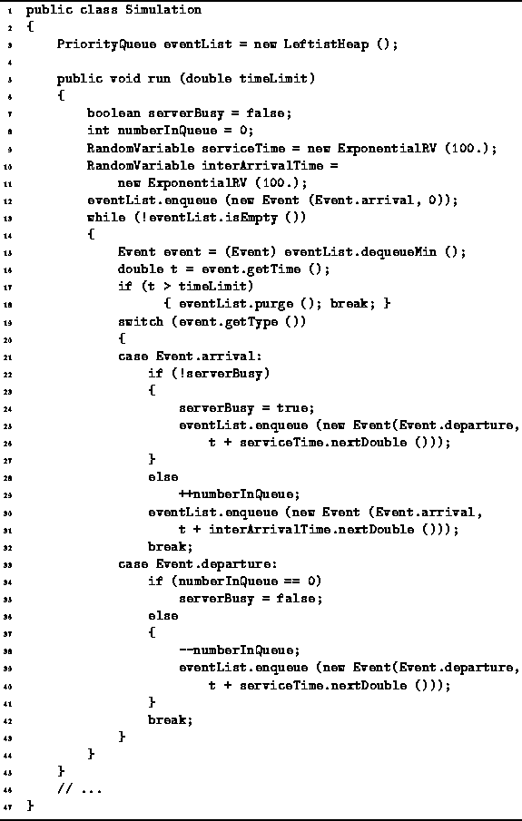

Data Structures and Algorithms
with Object-Oriented Design Patterns in Java
Data Structures and Algorithms
with Object-Oriented Design Patterns in Java
This section presents the simulation of
a system comprised of a single queue and server as shown in Figure  .
Program defines the class Event
which represents events in the simulation.
There are two parts to an event,
a type (either arrival or departure),
and a time.
.
Program defines the class Event
which represents events in the simulation.
There are two parts to an event,
a type (either arrival or departure),
and a time.
Since events will be put into a priority queue,
the Event class is derived from the Association class
introduced in Section .
An association is an ordered pair comprised of a key and a value.
In the case of the Event class,
the key is the time of the event
and the value is the type of the event.
Therefore, the events in a priority queue are prioritized by their times.
Program defines the run method
which implements the discrete event simulation.
This method takes one argument, timeLimit,
which specifies the total amount of time to be simulated.
The Simulation class contains a single field, called eventList, which is a priority queue. This priority queue is used to hold the events during the course of the simulation.

Program: Application of priority queues--discrete event simulation.
The state of the system being simulated is represented by the two variables serverBusy and numberInQueue. The first is a boolean value which indicates whether the server is busy. The second keeps track of the number of customers in the queue.
In addition to the state variables,
there are two instances of the class ExponentialRV.
The class ExponentialRV is a random number generator
defined in Section .
It implements the RandomVariable interface
defined in Program .
This interface defines a method called nextDouble
which is used to sample the random number generator.
Every time nextDouble is called,
a different (random) result is returned.
The random values are exponentially distributed around a mean value
which is specified in the constructor.
For example, in this case both serviceTime and interArrivalTime
produce random distributions with the mean value of 100 (lines 9-11).
It is assumed that the eventList priority queue is initially empty. The simulation begins by enqueueing a customer arrival at time zero (line 12). The while loop (lines 13-44) constitutes the main simulation loop. This loop continues as long as the eventList is not empty, i.e., as long as there is an event to be simulated
Each iteration of the simulation loop begins by dequeuing the next event in the event list (line 15). If the time of that event exceeds timeLimit, the event is discarded, the eventList is purged, and the simulation is terminated. Otherwise, the simulation proceeds.
The simulation of an event depends on the type of that event. The switch statement (line 19) invokes the appropriate code for the given event. If the event is a customer arrival and the server is not busy, serverBusy is set to true and the serviceTime random number generator is sampled to determine the amount of time required to service the customer. A customer departure is scheduled at the appropriate time in the future (lines 24-26). On the other hand, if the server is already busy when the customer arrives, we add one to the numberInQueue variable (line 29).
Another customer arrival is scheduled after every customer arrival. The interArrivalTime random number generator is sampled, and the arrival is scheduled at the appropriate time in the future (lines 30-31).
If the event is a customer departure and the queue is empty, the server becomes idle (lines 34-35). When a customer departs and there are still customers in the queue, the next customer in the queue is served. Therefore, numberInQueue is decreased by one and the serviceTime random number generator is sampled to determine the amount of time required to service the next customer. A customer departure is scheduled at the appropriate time in the future (lines 38-40).
Clearly the execution of the Simulation method
given in Program mimics the modeled system.
Of course, the program given produces no output.
For it to be of any practical value,
the simulation program should be instrumented
to allow the user to study its behavior.
For example, the user may be interested in knowing statistics
such as the average queue length
and the average waiting time that a customer waits for service.
And such instrumentation can be easily incorporated into the given framework.
 Copyright © 1998 by Bruno R. Preiss, P.Eng. All rights reserved.
Copyright © 1998 by Bruno R. Preiss, P.Eng. All rights reserved.